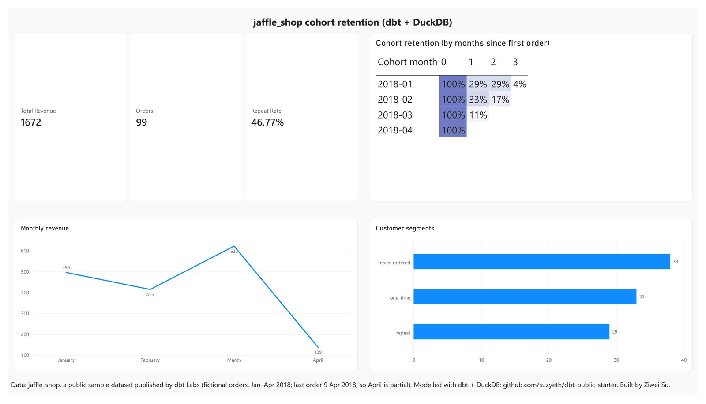
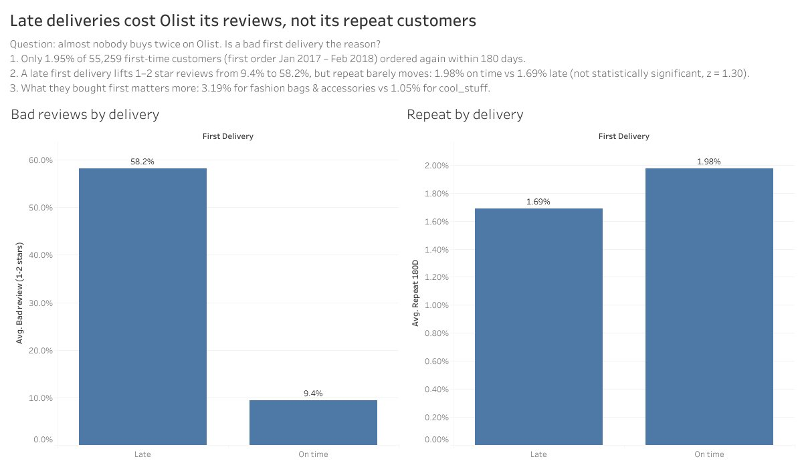

SUZY SU / DATA & PRODUCT ANALYSIS苏紫薇 / 数据与产品分析
Suzy (Ziwei) Su苏紫薇 Suzy Su
I’m a London-based game designer with hands-on product analysis experience. I investigate retention and monetisation in live games, and use public SQL, dbt and BI projects to demonstrate my analytical workflow.
我是苏紫薇，现居伦敦，有游戏设计与产品分析实践经验。我在上线游戏中调查留存和商业化问题，并通过公开的 SQL、dbt 与 BI 项目展示完整的分析过程。
Seeking data analyst / product analyst roles求职方向：数据分析 / 产品分析


THE PERSON BEHIND THE WORK作品背后的我
From product questions to decisions.从产品问题出发，让分析支持决策。
Across two shipped mobile titles, my F2P systems and economy work expanded into metric definitions, retention analysis and reviews of product changes. I reconcile reports, design experiment plans and turn findings into recommendations.
我参与过两款已上线手游，从 F2P 系统与经济设计延伸到指标定义、留存分析和改版复盘。我的工作包括核对报表、设计实验方案，并把发现转成建议。
The public projects below demonstrate SQL modelling, BI reporting and validation using practice data. The workplace cases then show how I approach real product questions. Each project states the limits of its conclusions.
下方公开项目用练习数据展示 SQL 建模、BI 报表与验证方法，随后的工作案例说明我如何处理真实产品问题。各项目都写明了结论的适用边界。
- Based in所在地
- London, UK英国 · 伦敦
- Education教育背景
- MA Game Design
UAL · London College of Communication, 2023游戏设计硕士
伦敦艺术大学 · 伦敦传媒学院，2023 - BE Engineering Geology
Jilin University, 2020工程地质工学学士
吉林大学，2020 - Languages语言
- Mandarin · native
English · working proficiency中文 · 母语
英文 · 工作语言
Selected work.精选作品。
Project index · 6项目目录 · 6Browse展开查看
Olist late deliveries vs repeat customers配送延迟与复购

My work我的工作
OLIST / FROM QUESTION TO RECOMMENDATIONOLIST / 从问题到建议
Real public marketplace data (99,441 orders). Almost nobody buys twice on Olist: 1.95% of 55,259 first-time customers ordered again within 180 days. Is a bad first delivery the reason? Late first deliveries drew 58.2% one- or two-star reviews against 9.4% on time, but showed no significant difference in repeat purchase (1.69% vs 1.98%, z = 1.30). First-order category showed a wider spread (3.19% vs 1.05%). I chose the question and built the Tableau dashboard.
用的是真实的公开电商数据（99,441 单）。Olist 上几乎没人买第二次：55,259 位首单顾客里，180 天内再下单的只有 1.95%。是第一次配送没做好导致的吗？首单延迟的顾客给 1–2 星的比例是 58.2%，按时送达的只有 9.4%；但复购率没有显著差别（1.69% 对 1.98%，z = 1.30）。首单品类之间的差距反而更大（3.19% 对 1.05%）。问题由我选定，Tableau 看板由我制作。
Olist public dataset (CC BY-NC-SA 4.0) · 55,259 first-time customers · Tableau PublicOlist 公开数据集（CC BY-NC-SA 4.0）· 55,259 位首单顾客 · Tableau Public
jaffle_shop dashboard分析看板
My work我的工作
JAFFLE_SHOP / FROM SOURCE TO REPORTJAFFLE_SHOP / 从数据源到报表
I turned the three marts from the dbt project into a dashboard: a cohort-retention heatmap, monthly revenue and customer segments. Published on Tableau Public, and rebuilt in Power BI Desktop with a relationship between orders and customers, three DAX measures (revenue, orders, repeat rate) and a heatmap made from a matrix with conditional formatting.
我把 dbt 项目的三张 mart 表做成看板：cohort 留存热力图、月度收入、客户分层。发布在 Tableau Public 上；又在 Power BI Desktop 里重做一遍，建了订单表和客户表的关联、三个 DAX 度量值（收入、订单数、复购率），热力图用矩阵加条件格式做出。
Public training data · 99 orders · Power BI Desktop, not a production BI deployment.公开练习数据 · 99 笔订单 · Power BI Desktop，非生产 BI 部署。
dbt starter on DuckDB基于 DuckDB 的建模项目
My work我的工作
I modelled public jaffle_shop sample data in three layers so each question (revenue by order, customer value, monthly retention) is answered by one tested mart. Order sequence and cohort month come from window functions. 56 data tests pass, including three reconciliation checks: revenue in the marts equals raw payments, every order is counted once, and month-zero retention is exactly 100%. Generated docs and a CI build that fails on any test failure.
我用 dbt 官方公开样例数据 jaffle_shop 分三层建模，让「每单收入、客户价值、月度留存」三个问题各由一张有测试的 mart 表回答。订单序号和 cohort 月份用窗口函数算出。56 个数据测试全部通过，其中三条是对账测试：mart 里的总收入等于原始支付总额、每单只计一次、首月留存恰好是 100%。附自动生成的文档，CI 里任何测试失败都会让构建失败。
Grouped分组 cross-validation交叉验证
My work我的工作
I compared validation strategies for rock-type classification from well logs on a public dataset (3,164 rows, 7 wells, 9 classes). Scored twice: shuffled K-fold, and holding out whole wells, which is how the model would really be used. Random K-fold made LightGBM look like a 0.71 macro-F1 model, clearly ahead of logistic regression; held out by well it scores 0.38 and ties it. The leak inflated the score and would have picked the wrong model. 26 tests.
我用公开测井数据（3,164 行、7 口井、9 类岩相）做岩相分类，评估两次：随机打乱的 K 折，以及整口井留出（这才是模型真实的用法）。随机 K 折下 LightGBM 的 macro-F1 是 0.71，明显好过逻辑回归；按井留出后只有 0.38，和逻辑回归打平。数据泄漏抬高了分数，还会让人选错模型。26 个测试。
Gacha Economy Sim经济模拟器

My work我的工作
I compared three pity rules with 20,000 seeded trials each, measuring acquisition cost and total issuance separately, and stated what the experiment cannot tell you.
我用三种保底规则各跑 2 万次固定种子模拟，把获取成本和总投放分开测量，并写明这个实验回答不了什么。
second-pass

My work我的工作
I analysed audience attention versus shot content in films, grounding the analysis in real ClickHouse queries. The obvious story did not survive: attention rises toward the end of almost every film regardless of content, so raw correlations are confounded. Across three films and 18 tests against Bonferroni-corrected thresholds, one result cleared the floor by a hair and did not replicate. The write-up also publishes my own errors: end credits had been scored as film, which produced the original 4.40× headline (1.28× on the film itself).
我分析电影中观众注意力和镜头内容的关系，通过真实的 ClickHouse 查询为回答提供依据。最直观的结论没有站住：几乎每部片子后半段的注意力都会上升，和内容无关，所以直接做相关会被这个趋势干扰。三部片、18 项检验按 Bonferroni 校正后的阈值判断，只有一项勉强过线，而且没有复现。文档也公开了我自己的错误：片尾字幕曾被当作正片打分，最初“后半段是前半段 4.40 倍”的结论由此而来（正片本身是 1.28 倍）。
Methods from live work工作中的方法案例
From a live F2P mobile title (live since May 2026). Studio and game are anonymised; no business figures are shown.
来自一款已上线运营的 F2P 手游（2026 年 5 月上线）。工作室和游戏名已匿名，不展示任何业务数值。
1 · First-month live diagnostic1 · 开服首月数据诊断
Problem问题
After launch, the team needed to know which problems were real and which were noise across many separate reports.
上线后，团队需要从大量分散的报表里分清哪些是真问题、哪些是噪音。
My approach我的做法
Ingested 11 analytics reports and cross-validated key KPIs through business reconciliation before trusting any of them.
汇总 11 份报表，先用业务勾稽关系交叉校验关键指标，再决定信哪些数据。
What it shows体现的能力
Three systemic issues, each backed by several metrics: uneven acquisition quality, shallow payment depth, and difficulty walls that churn players rather than convert them.
找出三个系统性问题，每个都有多项指标佐证：买量质量参差、付费深度偏浅、关卡卡点导致流失而不是转化。
2 · A/B test design2 · A/B 实验设计
Problem问题
Test a mid-tier monetisation offer without hurting retention or inviting early, biased stops.
测试一个中档商业化礼包，既不能伤留存，也要避免提前看结果带来的偏差。
My approach我的做法
One primary metric (ARPPU), retention and refund rate as guardrails, sample plan and stop rule fixed in advance, planned segment-level re-checks.
一个主指标（ARPPU），留存和退款率作护栏；样本量和停止规则提前定好；计划按付费分层复核结果。
What it shows体现的能力
Backed by incremental-revenue scenarios with ±20% sensitivity and an LTV-versus-CPA break-even read on acquisition spend.
配了 ±20% 敏感度的增量收入情景，以及 LTV 对比 CPA 的买量回本判断。
3 · Day-2 retention study3 · 次留专题
Problem问题
Grouping players by their current progress made high-progress groups look sticky by definition: the players who stayed are the ones who progressed.
按玩家「当前进度」分组，高进度组天然显得留存高：留下来的人本来就是进度高的人。
My approach我的做法
Separated snapshot attributes from day-1 event data and reported only on the latter.
把「当前快照」类字段和「首日事件」数据分开，只用后者做汇报口径。
What it shows体现的能力
First-session progression depth as the strongest day-2 predictor, and the highest-ROI player segment to move.
找出次留最强的预测因素是首日推进深度，并定位了最值得撬动的玩家人群。
4 · Post-launch retrospective4 · 改版上线后复盘
Problem问题
A monetisation rework and an onboarding change shipped together. Did either one actually work, or did traffic change?
商业化改版和新手流程改动同时上线。到底哪个起了作用，还是只是流量变了？
My approach我的做法
Designed a before/after read that controlled for active-user and acquisition changes, separating design-driven lift from traffic-driven lift.
设计前后对比口径，控制活跃和买量的变化，把「设计带来的提升」和「流量带来的提升」分开。
What it shows体现的能力
An honest null result: payment efficiency improved, but the onboarding change did not move retention, so I recommended targeting first-session depth in the next iteration.
如实汇报无效结果：付费效率提升了，新手流程改动却没有带动留存，因此我建议下一轮针对首日推进深度继续优化。
5 · Metric definitions and repeatable methods5 · 指标体系与方法沉淀
Problem问题
Reports disagreed because the same metric was defined differently in different places.
同一个指标在不同地方定义不同，导致报表对不上。
My approach我的做法
Wrote a data requirements document with a 38-metric dictionary (locked definitions, formulas and granularity), drill-down dimensions and instrumentation requirements.
撰写数据需求文档：38 个指标的字典（口径、公式、粒度全部锁定），加下钻维度和埋点需求。
What it shows体现的能力
Analytics and engineering built reporting from it. The analysis approach became a reusable four-level template (describe → locate → drive → verify) and a version-update attribution runbook.
数据团队和程序据此搭建报表。分析方法也整理成可复用的四层模板（描述 → 定位 → 驱动 → 验证）和版本更新归因手册。
Skills, with evidence.能力与证据。
| Skill能力 | Where to look对应案例 |
|---|---|
| SQL & data qualitySQL 与数据质量 | dbt ↗ Layered models and reconciliation tests分层建模与对账测试 |
| BI reportingBI 报表 | Olist ↗ · jaffle_shop ↗ Analysis dashboard on real data; data relationships and DAX真实数据上的分析看板；数据关联与 DAX |
| Retention & product diagnosis留存与产品诊断 | Day-2 retention次留专题 ↗ Event definitions and cohort interpretation事件口径与分群解读 |
| Experiment design实验设计 | A/B test planA/B 实验方案 ↗ Primary metric, guardrails and stopping rules主指标、护栏与停止规则 |
| Statistics & validation统计与验证 | Grouped cross-validation分组交叉验证 ↗ Random versus held-out evaluation随机划分与分组留出对比 |
| Analysis into action分析落到行动 | Olist ↗ · Post-launch review改版复盘 ↗ Recommendations grounded in observed results基于观察结果提出迭代建议 |
Full toolset完整工具与方法清单
SQL (joins, aggregation, window functions, CTEs) · dbt (dbt-core on DuckDB) · Python (pandas, scikit-learn, LightGBM, openpyxl reporting) · pytest, GitHub Actions · Tableau Public · Power BI Desktop (DAX) · ThinkingData · experiment design · funnel, retention and cohort analysis · LTV and payer-tier modelling · event-schema design · Excel modelling
SQL（JOIN、聚合、窗口函数、CTE）· dbt（dbt-core，DuckDB）· Python（pandas、scikit-learn、LightGBM、openpyxl 报表）· pytest、GitHub Actions · Tableau Public · Power BI Desktop（DAX）· ThinkingData · 实验设计 · 漏斗、留存与分群分析 · LTV 与付费分层 · 埋点事件设计 · Excel 建模
Contact联系
Open to data analyst and product analyst roles in London. Email suzysu418@gmail.com for my CV.
正在寻找伦敦的数据分析、产品分析岗位。简历请邮件索取：suzysu418@gmail.com。